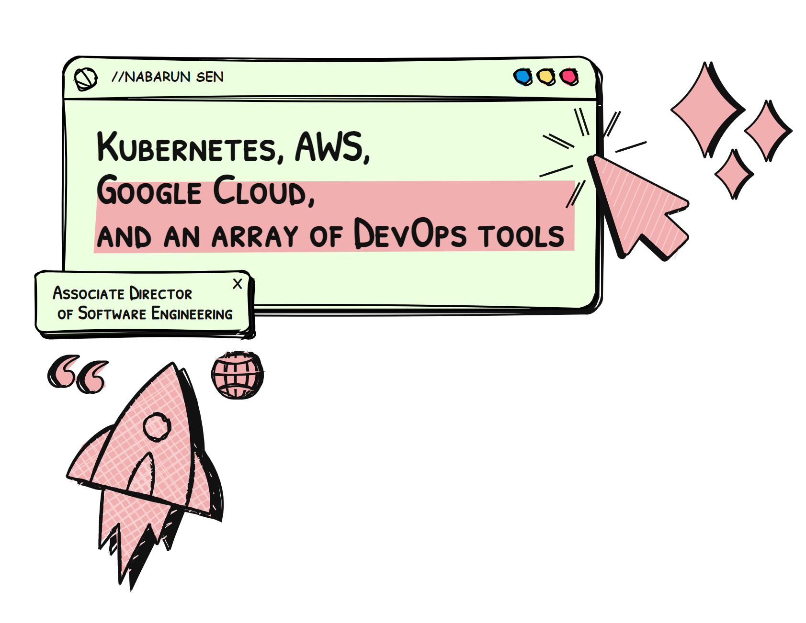

Hello There!
Hello, I’m Nabarun Sen, an IT professional with a rich tapestry of experience woven through various pivotal roles in DevOps, Cloud Implementation, Migration, and Support. Currently, I’m navigating through my role as the Associate Director of Software Engineering - Architecture at Kyndryl, India, where I’ve been contributing my skills and expertise since July 2021.

My journey in the IT and services industry has been both dynamic and rewarding, allowing me to delve deep into specific areas like Kubernetes, AWS, Google Cloud, and an array of DevOps tools and practices. My career has seen me wear different hats, from being a Kubernetes Platform and DevOps Lead at BNP Paribas Wealth Management in Singapore to a Senior DevOps Engineer at NCS Group, among various other significant roles.
My Career Pathway:
- Kyndryl, India: Steering through the architectural nuances of software engineering.
- BNP Paribas Wealth Management, Singapore: Leading the Kubernetes Platform and DevOps initiatives.
- NCS Group, Singapore: Spearheading DevOps methodologies and practices.
- StarHub, Singapore: Analyzing and leading system operations.
Certification Credentials
Over the years, I’ve earned several certifications to validate and bolster my expertise in the field, such as:
- AWS Certified Solutions Architect - Professional
- Google Cloud Certified Professional Cloud Architect
- Certified Kubernetes Administrator (CKA)
- Certified Kubernetes Security Specialist (CKS)
A Glimpse Into My Professional Persona:
I am an achievement-oriented individual, adept at swiftly restoring services and minimizing the impact of incidents on business operations. My career has been a testament to my commitment to ensuring optimal service delivery and implementing innovative technological solutions. I am always on the lookout for opportunities and assignments where I can bring my extensive skills to an organization of high repute.